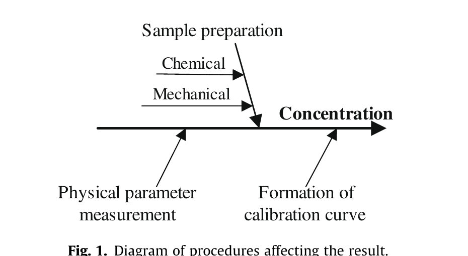
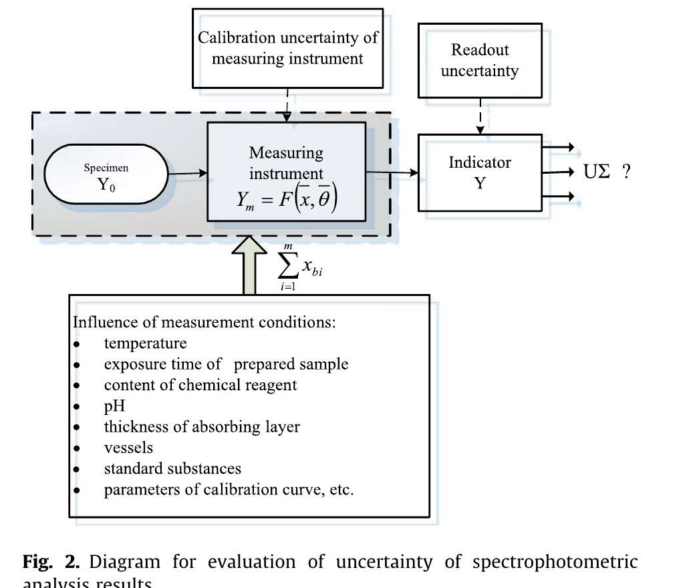
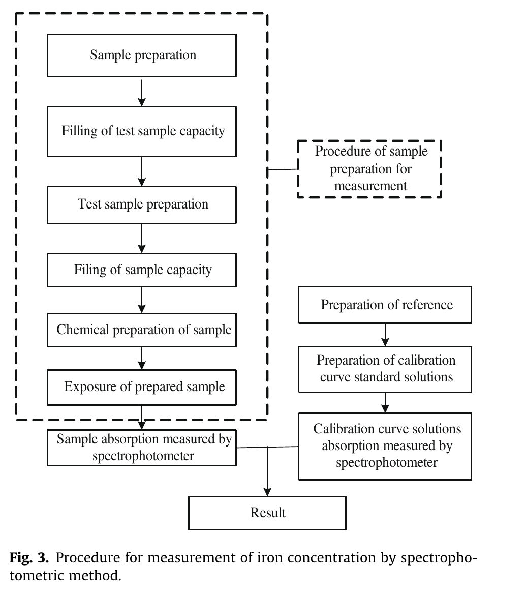
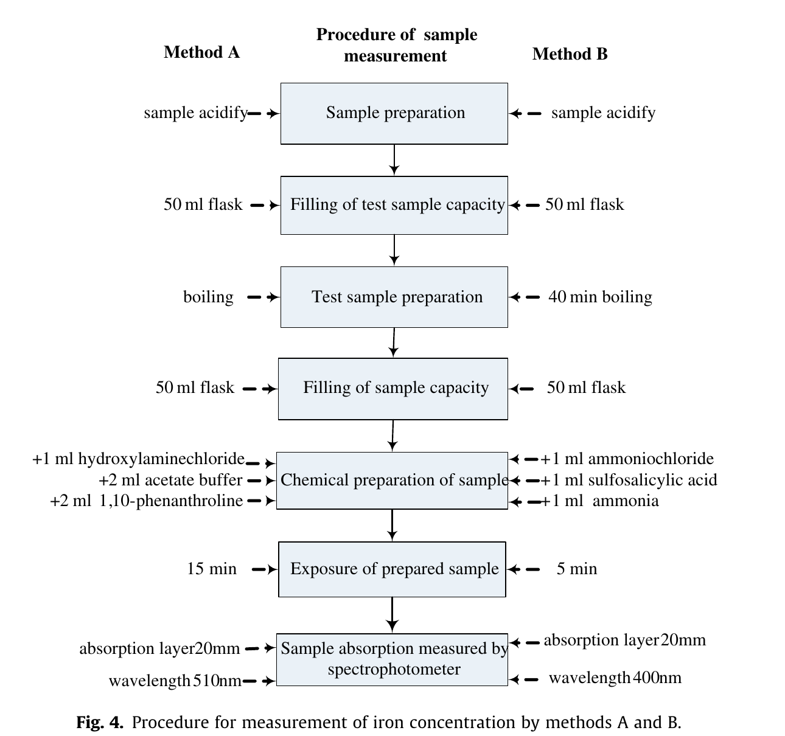
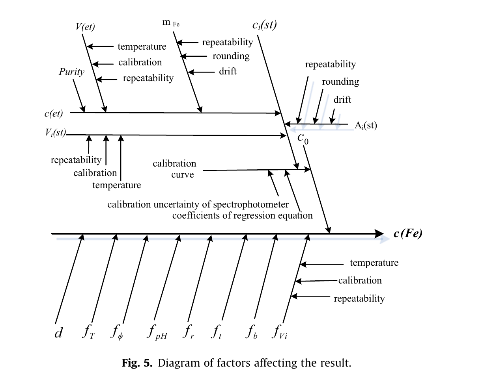
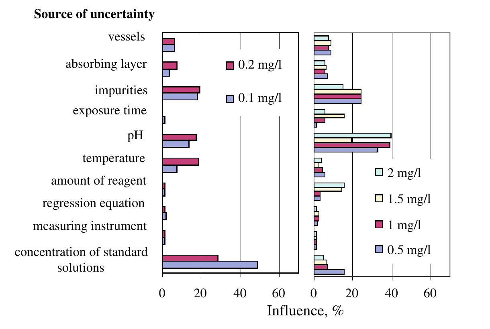
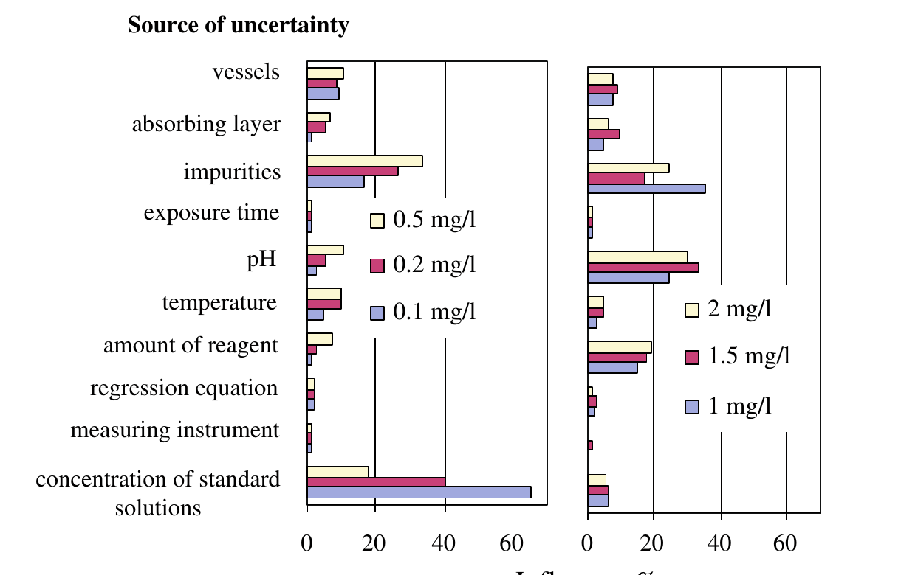

分光分析における測定の不確かさ——試料前処理と「化学量→物理量」変換が結果を支配する（水中鉄の吸光光度法ケーススタディ）
「装置の精度が高いから結果も正確」ではない。水中鉄の吸光光度法を題材に 温度・pH・試薬量・発色時間・吸収層厚・不純物という前処理条件を実験的に振り、不確かさへの寄与を成分別に定量した。結論は明快で 装置由来の寄与はほぼ無視できるほど小さく 支配するのは前処理条件と検量線である
- 測定モデルを「検量線から出る濃度」だけで終わらせず 前処理条件ごとの補正係数を掛ける形（式4: c = c0·d·fr·fT·fpH·ft·fφ·fb·fV）に拡張したのが本論文の核心。この8係数それぞれに標準不確かさを割り当て 誤差伝播で合成する
- 実験で条件を振った結果 温度の偏りは両法とも低濃度域（〜0.5 mg/L）で最も効き 特定点では公称値の20%に達した。試薬量の偏りは1 mg/L超で結果の40%（低濃度域では10%）に達し 不純物の影響は濃度が上がるほど小さくなった。発色時間は法Bでは（−1 +2）分なら影響せず 法Aでは1〜2 mg/Lで規定より短いと有意に効いた
- Fig.6・Fig.7のヒストグラムが示す最大の教訓は「装置の性能諸元だけでは不確かさを評価できない」こと。measuring instrument の寄与は全濃度域でごく小さく 支配するのは低濃度域では検量線標準液濃度・マトリックス・温度・pH 高濃度域では試薬量・pH・マトリックスだった
<!-- 方針: ほぼ全訳＋必要に応じた補足。原文（英語・Measurement 原著）の節構成に沿って訳出。図1〜7は原本PDFをpoppler（pdftoppm）で300 dpi描画・図領域を切り出し、各図をReadで目視確認のうえ全訳キャプションで埋め込んだ。表1〜4は全項目を転記（Table 2 の「+」印は拡大画像で列対応を確認）。式(1)〜(17)は記号定義とともに全て収載。「> 補足:」は訳者注。 -->
書誌情報
- 原題: Uncertainty of measurement in spectrometric analysis: A case study
- 著者: J. Dobilienė（責任著者）・E. Raudienė・R.P. Žilinskas
- カウナス工科大学 計量学研究所（Kaunas University of Technology, Metrology Institute, Studentu str. 50-253, Kaunas, Lithuania）
- 連絡先: justina.dobiliene@ktu.lt
- 掲載: Measurement 43 (2010) 113–121（Elsevier）
- DOI: https://doi.org/10.1016/j.measurement.2009.07.003
- インパクトファクター: 約5（Measurement／JCR目安。計測・計量工学分野）
- 受理経過: 受領 2009-06-17 / 受理 2009-07-13 / オンライン公開 2009-07-17（誌面は2010年43巻）
- キーワード: Uncertainty（不確かさ）, Spectrometry（分光分析）, Sample preparation（試料前処理）
補足（この解説の位置づけ）: 本論文は漢方・生薬を扱いませんが、当サイトの品質管理（QC）系の解説すべての土台になるテーマを扱います。すなわち 「その測定値はどれくらい信用できるのか（測定の不確かさ）」を、どの要因がどれだけ押し上げているかまで分解して示すという話です。題材は水中の鉄をフェナントロリン法で測るという古典的な吸光光度法ですが、結論——不確かさを支配するのは装置ではなく前処理条件と検量線——は、HPLCの多成分定量でも指紋分析でもそのまま通用します。バイオ分析法のバリデーション・リスク・不確かさ評価 と併せて読むと、「バリデーション」と「不確かさ」の関係が見えます。
補足（用語の整理）: - 測定の不確かさ（measurement uncertainty) … 測定結果に付随する「値のばらつきの幅」を定量化したもの。「誤差」（真値からのずれ、原理的には知り得ない）とは別概念で、測定結果と一緒に報告すべき数値。 - 標準不確かさ u(x) … 個々の要因の不確かさを標準偏差の形で表したもの。 - 合成標準不確かさ u(c) … 各要因の標準不確かさを誤差伝播則でまとめたもの。 - 拡張不確かさ U … 合成標準不確かさに包含係数 k（本論文では k = 2）を掛けたもの。k = 2 で信頼の水準およそ95%。 - GUM … Guide to the Expression of Uncertainty in Measurement（ISO等の共同ガイド。参考文献[3]）。不確かさ評価の国際的な作法を定めた文書。 - EURACHEM/CITAC ガイド … GUMを分析化学向けに具体化した実務ガイド（参考文献[2]）。
要旨（Abstract）
分光分析法は、簡便さ・分析の速さ・高い選択性から、さまざまな被検物（analyte）の課題を解くために用いられる測定法の一群に属する。あらゆる化学分析の正確さと信頼性は、分析対象試料をどのように調製するかに大きく依存する。
本研究の目的は、試料前処理と分光分析における化学的・物理的変換を考慮に入れて、物質濃度測定の不確かさと計量学的信頼性を評価することである。
吸光光度法（spectrophotometric method）の計量学的性質を実験的に評価し、分析条件が測定結果に与える影響を記述した。
1. 序論（Introduction）
分光分析は、定性分析・定量分析に広く用いられる測定法である。
分光分析結果の定性的評価には、試料前処理の技法・測定原理・被検物濃度・マトリックスの性質など、ありうる発生源と要因のすべての影響が含まれる。測定の不確かさは、これら挙げたすべてのパラメータに依存する[1]。
どの測定においても測定装置の技術仕様は重要な役割を果たす。製造業者も使用者も、自分たちの測定機器の高い正確さを誇ることがしばしばある。しかし分光分析の結果を評価するとき、試料前処理の手順は不十分にしか考慮されていない。それは、最新・高速・自動化され、試料と試薬を最小量しか必要とせず、高い再現性を与える技術と測定装置が分析に適用されているという事実にもかかわらず起きている。
不確かさの評価は、化学測定の特異性のために単純な作業ではない。化学的なパラメータは常に物理的なパラメータへ変換され、そのうえで初めてその値が測定される。さまざまな試料処理手順が実施され、それらは化学的・物理的変換によって測定結果に影響しうる。試料前処理の過程で、試料は機械的にも化学的にも調製される。多くの場合、これらの手順は実務では評価されていない。
化学測定結果の不確かさ評価という主題については多数の著者が発表しており、不確かさ推定に関するガイドもいくつか出版されている[2,3]。しかし雑誌論文で報告される内容はかなり一般的なものにとどまる。なぜなら、あらゆる化学測定はそれぞれ固有（exclusively specific）だからである。したがって不確かさは作業実務から切り離せない。不確かさに影響するありうるすべてのパラメータを評価し、そのすべてを考慮に入れることが非常に重要である。
本論文は、分光分析における化学的・物理的変換の定性的評価と、それが測定結果の不確かさに与える影響を論じる。
化学的・物理的変換の条件が測定不確かさに与える影響を実験的に示すために、吸光光度法による水試料中の鉄濃度の測定を選んだ。
吸光光度測定の物理的基礎はよく知られている[4]。測定装置についての不確かさ源（分光光度計の読みの繰返し性、分光光度計のドリフト、迷光など）も同様によく知られている[5–7]。「古典的」な不確かさ源（秤量、容量操作など）は十分に見積もられている[7–9]。線形最小二乗検量に伴う測定不確かさも見積もられている[2,7–9]。しかし日常業務の検査室における測定結果の不確かさ評価では、化学的・物理的変換の条件（試料pH、化学試薬の含量、調製した試料の放置時間など）に払われている注意が不十分である。
2. 化学測定の特異性（Peculiarities of chemical measurements）
化学分析は他の測定と異なる。何かの「真値（true value）」を測る方法は存在しない。化学分析でできる最善は、経験上信頼できると分かっている技法を注意深く適用することである。同じ量を異なる方法で測った結果が互いに一致すれば、その結果が「真の」値に近いと確信できるようになる。しかし試料前処理の手順は、常にそれ自身の寄与を測定結果に持ち込む。
化学分析には、評価しなければならない3つの主要段階がある。
- 化学的パラメータを物理的パラメータへ変換する段階（すべての試料前処理手順、補助反応など）。
- 変換されたパラメータを測定する段階。
- 不確かさを含めて結果を評価する段階。
2.1 分光分析における化学的・物理的変換
分光分析は一連の方法群を含む。測定されるパラメータそのものが異なるため、分光法ごとに測定結果の不確かさに影響するパラメータも異なる。外部条件と測定装置の誤差はあらゆる分析に影響する。しかしその影響は、化学的・物理的変換ほど強くはない。
化学的・物理的変換の段階は、機械的および化学的な試料前処理手順のすべてを含む。この変換の過程で、被検物濃度と直接関係づけられる物理的パラメータを測定できるように試料が調製される。
化学機器分析のすべての方法は、分析信号を得てその強度を測ること、すなわちあらゆる物質の化学的・物理的特性に基づいている[10]。Fig. 1 は、被検物の測定濃度の不確かさに影響を与える手順を図示している。

試料前処理の手順は、試料採取（試料を採取した場所、被検物の予想濃度）、保管（温度、分析までの時間）、輸送条件（容器、所要時間、温度など）、分析用試料調製（試料を実験室試料の形にするために加えるすべての機械的処理）から、ある物理パラメータを測ることで分析の最終的な表現が得られる測定手順までのすべての処理・手順を含む。被検物の濃度を測る前に、一連の調製手順を実施しなければならない。操作の量と複雑さは、選んだ方法と分析の目的に依存する[11]。
試料前処理はいまなお、分析サイクルの中で最も時間を要し、手間がかかり、誤りを生みやすい段階の一つである[12]。試料前処理法の選択は、次のようないくつかの因子に依存する。
- 被検物（analyte）そのもの。
- 被検物の濃度レベル。
- 試料マトリックス。
- 機器測定の技法。
- 必要な試料量。
選んだ方法は、それに固有の試料前処理装置と試薬を要求する。
したがって特定の課題を解くには、吸収・発光・質量電荷比などさまざまな物質パラメータの測定によって被検物量を決定する、適切な分光分析法が用いられる[4]。
2.1.1 機械的な試料前処理
選んだ分析法に適した形へ試料を変換するために試料へ加えるあらゆる処置・手順は、試料前処理に属する[13]。方法が異なれば、それに見合った試料前処理が要求されるが、いくつかの分光分析法（原子吸光、原子発光、吸光光度法、赤外分光）には共通する目的と前処理手順を見出すことができる。
まず被検物は、選んだ分析法と両立する物理的・化学的形態へ変換されなければならない（大半の分析法は固体試料や不均一な試料に対してうまく働かない）。また分析用試料は可能なかぎり純粋でなければならない（後続の被検物測定を妨害しないよう、試料から余計な物質を最大限除去する）。Table 1 に、各分光分析法について集合状態（固体・液体・気体）別の機械的試料前処理手順を示す。
Table 1. 分光分析における集合状態別の機械的試料前処理手順
| 分析法 | 固体試料の前処理 | 液体試料の前処理 | 気体試料の前処理 |
|---|---|---|---|
| 原子発光分光法（AES） | 加熱、溶解、不純物分離、蒸発 | 濃縮または希釈、不純物分離 | 不純物分離、乾燥 |
| 原子吸光分光法（AAS） | 乾燥、均質化、不純物分離、粉砕、篩分け、抽出、濾過、原子化 | 不純物分離、濾過、濃縮または希釈、原子化 | — |
| 吸光光度法（Spectrophotometry） | 抽出、乾燥、濃縮、収着、沈殿、不純物分離、濾過、溶解 | 濃縮または希釈、不純物分離 | — |
| 赤外分光法（IR） | 粉砕、溶解、懸濁化、加圧成形 | 脱水 | 濾過 |
| 質量分析法（MS） | 粉砕、蒸発 | 直接測定 | 直接測定 |
2.1.2 化学的な試料前処理
化学的試料前処理の不確かさは、結果の合成不確かさの一成分である。残念ながらこの不確かさはたいてい忘れられるか無視され、その結果、得られる測定値の不確かさを楽観的に過小評価することにつながる。化学的試料調製に伴う不確かさが最終結果の不確かさバジェット（uncertainty budget）の一部となることこそ、現代の不確かさ評価の目的である。
化学的試料前処理と外部因子が、分光分析の結果——被検物濃度の測定——に与える影響を Table 2 に示す。あわせて各方法で測定すべき物理パラメータも示した。Table 2 のデータは、上に挙げた分析法の結果評価にとって「試験試料の温度」が最も重要な因子であることを示している。他の成分の重要度は、個々の測定法に依存する。
Table 2. 化学的試料前処理と外部因子が分光分析の結果に与える影響（「+」＝影響あり）
| 分光分析法 | 化学量（濃度）に対応する物理パラメータ | 試料pH | 不純物の影響 | 試料と試薬の反応 | 試料マトリックスからの被検物分離 | 化学試薬の量 | 調製試料の容量 | 試験試料の希釈 | 試験試料の温度 | 試験試料の安定性 | 調製試料の保持時間 | 圧力 |
|---|---|---|---|---|---|---|---|---|---|---|---|---|
| 原子吸光分光法 | 吸収 | + | + | + | + | + | + | + | + | |||
| 原子発光分光法 | 発光 | + | + | + | + | + | + | + | +ᵃ | |||
| 吸光光度法 | 吸収 | + | + | + | + | + | + | + | + | + | ||
| 赤外分光法 | 吸収 | + | + | + | + | + | + | + | + | + | ||
| 質量分析法 | 質量電荷比 | + | + |
ᵃ 気体の場合のみ。
補足（Table 2 の読み方）: 横に見ると、吸光光度法とIR分光法は11因子のうち9因子で「+」＝影響を受ける因子が最も多い方法です。縦に見ると、「試験試料の温度」だけが5法すべてで「+」になっており、本文の「温度が最も重要」という記述と符合します。逆に質量分析法は温度と圧力の2因子だけで、試料pHや試薬量の影響を受けません（化学発色反応を介さないため）。
3. 吸光光度分析の不確かさ源
分光分析の簡便さ・分析の速さ・高い選択性ゆえに、これらの方法は多様な被検物の多くの問題を解くために用いられる。先進的な装置は一見単純に見えるが、物質中の被検物濃度と記録される信号との関係はかなり複雑である。このため計量学的特性の研究はより複雑になる。
さらに被検物の信号は、通常、被検物濃度だけでなく、他のすべての物質の濃度・物質の構造・試料の形態・環境条件にも依存する。加えて、どの測定機器を使う場合でも、化学分析の正確さと信頼性は分析対象試料の調製の仕方に大きく依存する。なぜなら化学測定において前処理の機構は固有のものだからである。
測定結果を評価するには、結果に影響しうるすべての因子を分析することが必要である[14]。
吸光光度分析法は化学分析の検査室で一般に用いられる測定法の一群である。しかし光度測定結果の計量学的な評価は不十分である。
吸光光度分析から得られる結果の不確かさ評価のための図を Fig. 2 に示す。

この図は、評価の過程において試験対象と測定装置を切り離すことができないことを示している。
この図に従えば、測定結果を徹底的に評価するには、測定結果に影響しうるすべての因子を分析しなければならない。それらの因子とは、測定装置の技術的特性、測定条件、測定マトリックス、試料前処理手順、試験品と測定装置の相互作用、用いた測定法の制約、読取りの不確かさ、データ処理である。上記の因子を精査し、個々の事例における追加条件を評価して初めて、測定結果の正確な推定値としての不確かさを適切に与えることができる。
4. 方法と結果（Methods and results）
4.1 方法の作り込みと不確かさ源の同定
吸光光度法の分析対象として、水試料中の鉄濃度の測定を選んだ。
吸光光度法による鉄含量の測定は、検量線を用いて行った。
標準溶液 c₁ 〜 cₙ の吸光度を測定し、値 A₁ 〜 Aₙ を得た。この場合、濃度は検量線の回帰式パラメータの評価によって得られたデータから計算され、次式で与えられる。
$$A_i = c_i \cdot B_1 + B_0 \tag{1}$$
ここで cᵢ は検量線から計算される試料中の被検物含量（mg/L）、Aᵢ は測定された試験試料の吸収、B₁ は検量線の傾き、B₀ は検量線の切片である。
線形最小二乗検量線の傾き B₁ と、作成した検量線の切片 B₀ は次式から計算される。
$$B_1 = \frac{\sum_{i=1}^{n} c_i A_i - n \bar{c} \bar{A}}{\sum_{i=1}^{n} c_i^{2} - n \bar{c}^{2}} \tag{2}$$
$$B_0 = \frac{\bar{A} \sum c_i^{2} - \bar{c} \sum_{i=1}^{n} c_i A_i}{\sum_{i=1}^{n} c_i^{2} - n \bar{c}^{2}} \tag{3}$$
ここで cᵢ は i 番目の鉄標準溶液の濃度、Aᵢ は i 番目の標準溶液の吸光度（A₁, …, Aᵢ, …, Aₙ）、n は直線上の点の数である。
研究結果の比較可能性を確保するため、水中鉄濃度の測定法として2つの方法を選んだ。
- ISO 6332:1988 Water quality – Determination of iron – Spectrometric method using 1,10-phenanthroline（以下法A）[15]。
- スルホサリチル酸を用いる鉄含量測定法（以下法B）。
鉄濃度の定量範囲は 0.10〜2.00 mg/L とした。この範囲は選んだ両方法の適用領域をカバーする。
補足（原文の文献番号の不一致）: 本文では「ISO 6332:1988」と書かれていますが、巻末の参考文献[15]は「ISO 6322:1998 Water quality – Determination of iron – Spectrometric method using 1,10-phenanthroline」と表記されています。規格番号・年号が本文と文献リストで食い違っています（1,10-フェナントロリンによる鉄の吸光光度法は ISO 6332 系列）。原文の表記をそのまま両方示します。
選んだ方法に従った吸光光度法による被検物測定の手順は、いくつかの段階からなる。
- 測定用の試料前処理、
- 吸収の測定、
- 検量線の作成、
- 結果の評価。
これらの手順を Fig. 3 に示す。

測定の信頼性という問いを解くには、結果に影響しうるすべての因子を評価することが非常に重要である。このため、水中鉄濃度の測定について選んだ両方法の詳細な分析を行い、Fig. 4 に示した。異なる測定段階における化学的・物理的変換のありうる因子が、法Aと法Bについてそれぞれ Fig. 4 の右側と左側に示されている。

補足（原文本文と図の左右の食い違い）: 本文は「法Aと法Bをそれぞれ右側と左側に示す」と書いていますが、実際の Fig. 4 は左が Method A、右が Method B と印字されています。上のキャプションは図の実際の表記（左=法A、右=法B）に従いました。
測定手順の分析から、被検物濃度についての式(1)の表現では不十分であることが示された。測定手順のすべての段階の影響を評価するには、水試料中の鉄量を計算する数学モデルを新たな補正係数で補う必要がある。
$$c = c_0 \cdot d \cdot f_r \cdot f_T \cdot f_{pH} \cdot f_t \cdot f_{\varphi} \cdot f_b \cdot f_V \tag{4}$$
ここで
- c: 試験試料中の鉄濃度（mg/L）
- c₀: 検量線から計算された試料中の鉄含量（mg/L）
- d: 希釈係数
- f_r: 化学試薬の含量に関係する補正係数
- f_T: 温度の補正係数
- f_pH: 溶液pHに関係する補正係数
- f_t: 調製溶液の放置時間に関係する補正係数
- f_φ: 溶液中の不純物に関係する補正係数
- f_b: 吸収層の厚さに関係する補正係数
- f_V: 容器の容積に関係する補正係数
補足（式(4)がこの論文の核心）: 通常の分析法バリデーションでは、濃度は「検量線から出た値 c₀」で終わりです。本論文はそこに8個の補正係数を掛ける形にモデルを書き換え、各係数に不確かさを割り当てられるようにした点が新しい。式の形は掛け算なので、後の誤差伝播では各項の相対標準不確かさを二乗和平方根でまとめられます。
この数学モデルに従って測定する場合の不確かさ源と、それらが測定結果に与える影響を Fig. 5 に示す。

分析条件の変動を評価するために、比較測定サイクルを実施した。両方法について、試験試料の温度、調製試料の放置時間、化学試薬の含量、吸収層の厚さ、調製溶液のpH値を変えて、あるいは試料に不純物として追加物質を加えて分析を行った。実験に用いた測定手順のマトリックスを Table 3 に示す。
Table 3 のパラメータについて、大文字は当該パラメータの正常値を示し、小文字は正常値より低いか高い値を示す。
- C/c: 試験溶液の温度
- D/d: 調製試料の放置時間
- E/e: 化学試薬の量
- F/f: 吸収層の厚さ
- G/g: 試験溶液のpH値
- H/h: 試験試料中の不純物
Table 3. 鉄濃度測定手順の実験マトリックス
| パラメータ | J | K | L | M | N | O |
|---|---|---|---|---|---|---|
| C/c（温度） | c | C | C | C | C | C |
| D/d（放置時間） | D | d | D | D | D | D |
| E/e（試薬量） | E | E | e | E | E | E |
| F/f（吸収層厚） | F | F | F | f | F | F |
| G/g（pH） | G | G | G | G | g | G |
| H/h（不純物） | H | H | H | H | H | h |
補足（Table 3 の設計）: 各列（J〜O）で小文字が1つだけ＝「1因子だけを正常値から外し、他は正常値に保つ」設計です（一度に1因子ずつ変える one-factor-at-a-time）。J列は温度のみ、K列は放置時間のみ、L列は試薬量のみ、M列は吸収層厚のみ、N列はpHのみ、O列は不純物のみを振っています。
鉄濃度測定手順のありうる変種についての実験条件の限界値を Table 4 に示す。
Table 4. 実験条件の限界値
| 測定条件 | 方法 | 下限 | 正常条件 | 上限 |
|---|---|---|---|---|
| 温度（°C） | A | 10 | 20 | 30 |
| 温度（°C） | B | 10 | 20 | 30 |
| 調製試料の放置時間（min） | A | 5 | 15 | 20 |
| 調製試料の放置時間（min） | B | 3 | 5 | 10 |
| 化学試薬の量（mL） | A | 1 | 2 | 4 |
| 化学試薬の量（mL） | B | 0.5 | 1 | 2.5 |
| 吸収層（mm） | A | 5 | 20 | 30 |
| 吸収層（mm） | B | 5 | 20 | 30 |
| pH | A | 1 | 4.5 | 9 |
| pH | B | 4 | ≧9 | 10 |
| 不純物 Fe:Zn / Fe:Cu / Fe:Co | AおよびB | — | — | 1:10 |
実施した実験研究により、次のことが示された。
- 温度の偏りは、両方法とも低濃度域（0.5 mg/L まで）の結果に最も大きな影響を与えた。ただし温度の偏りは 0.5 mg/L を超える濃度域でも有意であり、特定の点では公称値の 20% に達しうる。実験結果の計算から、両方法とも、試験温度 20 ± 3 °C において 1 mg/L までの濃度域で拡張不確かさを計算する際には、温度に伴う不確かさ成分を含める必要があると結論できる。
- 化学試薬量の正常値からの偏りは両方法の結果にとって重要であり、とくに 1 mg/L を超える濃度で結果の偏りが公称値の 40% に達する。より小さな濃度域では偏りは公称値の 10% までに達する。測定結果の分析から、化学試薬に伴う成分の影響は試験被検物の濃度によって異なることが示された。
- 吸収層の厚さの許容偏差は（−0.05 〜 +0.05）であり、この影響は両方法で有意ではない。より大きな吸収層の偏差は全濃度域で測定結果に影響を与える。とくに大きな結果の偏りは低濃度域で見られる。
- 試料pH の正常値からの偏りは、両方法の測定結果に全濃度域で影響する。pH値が高くなっても低くなっても、結果の偏りはより強くなる。
- 規定条件からの偏りは、法Bを用い、かつ調製試料の放置時間が（−1; +2）分に保たれていれば測定結果に影響しない。調製試料の放置時間の偏りは、法Aでは 1 mg/L から 2 mg/L の濃度域で、放置時間が方法の規定より短い場合に結果へ有意な影響を与える。
- 溶液に不純物が含まれる場合、それらは測定結果の正確さと信頼性を低下させる。実験は、試験物質の濃度が増加すると不純物の影響が減少することを示した。汚染された試料や組成不明の試料で鉄濃度を測定する場合には、相対合成標準不確かさの計算に試料汚染の成分を含める必要がある。
4.2 合成不確かさと不確かさ成分の評価
水試料中の鉄含量測定の不確かさは、入力量 c₀, f_r, f_T, f_pH, f_t, f_φ, f_b, f_V の標準不確かさをすべて合成することで計算される。不確かさの合成には誤差伝播則を用いた[2,3]。
測定結果と入力パラメータの関係は次のモデルで表される。
$$c = f(x_1, x_2, \ldots , x_i , \ldots , x_N) \tag{5}$$
ここで x₁, …, xᵢ, …, xₙ は入力パラメータ（c₀, f_r, f_T, f_pH, f_t, f_φ, f_b, f_V）を表す。
検量線に由来する不確かさ成分 u(C_cal) は、回帰式のパラメータ・測定装置の特性・検量線標準溶液の濃度に依存する3つの構成要素からなる。検量線の不確かさ u(C_cal) は次式で計算される。
$$u(C_{cal}) = \sqrt{u(C_{cal},\mathrm{reg})^{2} + u(C_{cal},\mathrm{inst})^{2} + u(C_{cal},\mathrm{st})^{2}} \tag{6}$$
ここで u(C_cal, reg) は検量線の回帰式の標準不確かさ、u(C_cal, inst) は測定装置の特性の標準不確かさ、u(C_cal, st) は標準溶液濃度の不確かさである。
検量線の回帰式の標準不確かさ u(C_cal, reg) は最小二乗法により次式で計算される。
$$u(C_{cal},\mathrm{reg}) = \frac{s}{B_1}\sqrt{\frac{1}{p} + \frac{1}{n} + \frac{(c_0 - \bar{c})^{2}}{S}} \tag{7}$$
$$s = \frac{\sum_{j=1}^{n}\left[A_j - (B_0 + B_1 \cdot c_j)\right]^{2}}{n-2} \tag{8}$$
$$S = \sum_{j=1}^{n} (c_j - \bar{c})^{2} \tag{9}$$
ここで B₁ は検量線の傾き、p は c₀ を決定するための測定回数、n は検量のための測定回数、c₀ は決定された鉄濃度、c̄ は異なる検量標準の平均値、i は検量標準の番号の指標、j は検量線を得るための測定の番号の指標、s は残差標準偏差である。
補足（式(8)の表記について）: 原文は式(8)を平方根なしの分数のまま印刷しています（分子が残差平方和、分母が n−2）。ただし本文は s を「残差標準偏差（residual standard deviation）」と定義しており、標準偏差であれば通例この式全体に平方根がかかります（平方根なしでは残差分散）。原文の印字どおりに転記しました。実装時は s の定義（標準偏差か分散か）を確認してください。
測定装置の特性についての標準不確かさは次式である。
$$u(C_{cal},\mathrm{inst}) = \frac{\Delta_{instr}}{3} \tag{10}$$
ここで Δ_instr は分光光度計の正確さ（accuracy）である。
補足（式(10)の分母について）: 原文は分母を 3 と印刷しています（√3 ではありません）。GUMで矩形（一様）分布を仮定して半幅を標準不確かさへ換算する場合の通例は √3 なので、原文の印字どおり 3 と示したうえで注意を促しておきます。なお同じ論文内でも、参照物質の純度（後述）と容量器具の温度項（式14）では √3 が使われています。
参照溶液の濃度と標準溶液の容量が、標準溶液濃度の不確かさ u(C_cal, st) に影響する。
参照溶液濃度の不確かさは、参照物質の純度の不確かさ u(P)、参照物質の秤量不確かさ u(m)、参照溶液の全量フラスコの不確かさ u(V_fl, ref) として表される。参照溶液濃度の不確かさ u(c_ref) は次式で計算される。
$$u(c_{ref}) = \sqrt{u(m)^{2} + u(P)^{2} + u(V_{fl},\mathrm{ref})^{2}} \tag{11}$$
秤量の不確かさ u(m) は、繰返し性の不確かさ u(m, rep)、分銅（秤）の校正不確かさ u(m, cal)、デジタル表示の丸めによる不確かさ u(m, roun) として表される。秤量の不確かさの式は次のとおりである。
$$u(m) = \sqrt{u(m,\mathrm{rep})^{2} + u(m,\mathrm{roun})^{2} + u(m,\mathrm{cal})^{2}} \tag{12}$$
試薬の純度に伴う不確かさは、製造業者の仕様から計算される。鉄の純度は成績書に与えられており、その値を √3 で除して標準不確かさを得る（矩形分布を仮定）。
全量フラスコの不確かさは、標線までフラスコを満たすことの不確かさ u(V_fl, fill)、フラスコ容量の校正不確かさ u(V_fl, cal)、温度差に起因する容量の不確かさとして表される。フラスコ容量の不確かさは次式である。
$$u(V_{fl}) = \sqrt{u(V_{fl},\mathrm{cal})^{2} + u(V_{fl},\mathrm{fill})^{2} + u(V_{fl},\mathrm{temp})^{2}} \tag{13}$$
$$u(V_{fl},\mathrm{temp}) = \frac{V_{fl} \cdot \Delta t \cdot \gamma}{\sqrt{3}} \tag{14}$$
ここで V_fl はフラスコの容量、Δt はフラスコの校正に用いられた温度と実験室で用いる媒体の温度との差、γ は水の熱膨張係数である。
ピペットの容量の不確かさは、ピペットが送り出す容量の繰返し性、ピペットの校正不確かさ u(V_p, cal)、フラスコの校正に用いられた温度と実験室で用いる媒体の温度との差に起因する容量の不確かさ u(V_p, temp) として表される。ピペットの不確かさは次式である。
$$u(V_p) = \sqrt{u(V_p,\mathrm{cal})^{2} + u(V_p,\mathrm{rep})^{2} + u(V_p,\mathrm{temp})^{2}} \tag{15}$$
実験に従って評価された不確かさの成分は次のとおりである。
- 化学試薬の量を評価する成分
- 試験溶液の温度の成分
- 試験溶液のpHの成分
- 調製溶液の放置時間に伴う成分
- 試験溶液中の不純物の成分
- 吸収層の厚さの成分
上記成分の標準不確かさ u(fᵢ) は、各不確かさ成分の実験曲線から、分析のありうる実条件を考慮して計算される。
$$u(f_i) = \frac{a_{i+} - a_{i-}}{\sqrt{12}} \tag{16}$$
ここで a_{i+} と a_{i−} は、選んだ範囲における各成分の最低値と最高値である。
補足（式(16)について）: 原文の記号説明は「a_{i+} と a_{i−} は各成分の最低値（the lowest）と最高値（the highest）」と、添字の＋／−と最低／最高の対応が逆に読める書き方になっています（原文どおり訳出）。式の意味は「幅（上限−下限）を √12 で割る」＝矩形分布の全幅から標準不確かさを求める標準的な換算です（半幅なら √3、全幅なら √12）。
測定被検物の合成標準不確かさは、測定濃度の全範囲について次式で計算される。
$$u(c_{Fe})^{2} = \sum_{i=1}^{N} \left(\frac{\partial c_{Fe}}{\partial x_i}\right)^{2} \cdot u(x_i)^{2} \tag{17}$$
ここで u(xᵢ) は入力パラメータの標準不確かさ、(∂c_Fe/∂xᵢ) は感度係数である。
鉄測定の拡張不確かさ U(c) は、合成不確かさに包含係数 k = 2 を掛けて得られる。信頼の水準は 95% である。
5. 結果の考察（Discussion of results）
法Aによる測定を実施した場合、拡張不確かさに対する不確かさ成分の影響は、次の濃度域で異なることが判明した——0.2 mg/L まで、および 0.2 mg/L から 2 mg/L。この影響を Fig. 6 に示す。

相対合成標準不確かさは、0.2 mg/L までの低濃度域で最大 0.12、0.2 mg/L から 2 mg/L の濃度域で最大 0.07 である。不確かさ成分の分析により、低濃度域では、温度・試験溶液のpH・試料マトリックス・検量線に依存する成分が測定不確かさに最も大きな影響を与えることが示された。
0.2 mg/L を超える濃度域では、化学試薬の量・試験溶液のpH・試料マトリックス・検量線の標準溶液濃度の成分が、被検物の測定不確かさに支配的な影響を与える。
法Bを用いて規定の分析条件で測定を実施した場合、不確かさ成分の拡張不確かさへの影響は、0.5 mg/L までの濃度域と 0.5 mg/L から 2 mg/L の濃度域で判明した。この影響を Fig. 7 に示す。

相対合成標準不確かさは、0.5 mg/L までの濃度域で最大 0.17、0.5 mg/L から 2 mg/L の濃度域で最大 0.07 である。
不確かさ成分についての研究結果は、溶液の放置時間の成分は、試験した全濃度域で測定結果に有意な影響を与えないことを示している。支配的な成分は個々の濃度で異なる。低濃度域では検量線と試験試料のマトリックスの成分が測定不確かさに最も大きな影響を与える。0.5 mg/L を超える濃度域では、化学試薬の量・試験溶液のpH・試料マトリックスが最大の不確かさ成分である。
Fig. 6 と Fig. 7 のヒストグラムは、「測定装置の特性は被検物の測定不確かさを評価するのに十分ではない」という主張を裏づけている。したがって、試料前処理と測定過程の条件を確保することが非常に重要であり、被検物の測定モデルに補正係数を考慮に入れる必要がある。
6. 結論（Conclusion）
最終的な化学測定モデルを作るには、3つの主要な段階——物理的・化学的変換、測定、結果の推定——に現れるパラメータを評価することが必要である。
個々の試料前処理手順の影響と、その実施の質は、分光分析結果の不確かさに直接の影響を持つ。示唆の大半は新しいものではない。よく組織された専門的な検査室であれば、標準的な手順の中で既に考慮されているはずのことである。新しい挑戦は、それらを「化学的・機械的な試料前処理から生じる測定不確かさ」という文脈に置くことである。測定不確かさの知識は、あらゆる分析結果にとって付加価値である。
吸光光度法による水中鉄含量の測定の分析を実施した結果、不確かさは基本的に化学分析の最初の諸段階（測定条件・標準溶液・検量線のパラメータ）によって形成されることが示された。したがって、物質濃度の総測定不確かさは、用いた測定装置のパラメータに対しては有意に敏感ではない。
参考文献
- R.V. Meyer, Minimizing the Effect of Sample Preparation on Measurement Uncertainty, Agilent Technologies, USA, 2002.
- EURACHEM/CITAC Guide Quantifying Uncertainty in Analytical Measurement, second ed., 2000.
- BIPM, IEC, IFCC, ISO, IUPAC, OIML, Guide to the Expression of Uncertainty in Measurement, International Organization for Standardization, Geneva, 1995.
- A.D. Skoog, F.J. Holler, T.A. Nieman, Principles of Instrumental Analysis, fifth ed., 1998.（原文の同項に「10. D. Mazej, V. Stibilj, Accredit. Qual. Assur. 8 (2003) 117–123.」が混入している）
- L. Sooväli, E.I. Roõõm, A. Kütt, I. Kaljurand, I. Leito, Accredit. Qual. Assur. 11 (2006) 246–255.
- R. Ramachandran, Rashmi, Analyst 124 (1999) 1099–1103.
- J. Jürgens, L. Paama, I. Leito, Accredit. Qual. Assur. 12 (2007) 593–601.
- J. Traks, L. Sooväli, I. Leito, Accredit. Qual. Assur. 10 (2005) 197–207.
- A. Drolc, M. Roš, Acta Chim. Slov. 49 (2002) 409–423.
- EURACHEM/CITAC Guide: Traceability in Chemical Measurement. A Guide to Achieving Comparable Results in Chemical Measurement, 2003.
- D. Mickevicius, Chemines analizes metodai, I, II dalys, Vilnius, 1998.
- E. de Oliveira, Sample preparation for atomic spectroscopy: evolution and future trends, J. Braz. Chem. Soc. 14 (2) (2003).
- I. Leito, ISO GUM Uncertainty in Chemistry: Successes and Difficulties, University of Tartu, Testing Centre, 2004.
- S.K. Timothi, The Uncertainty of Measurements Physical and Chemical Metrology: Impact and Analysis, American Society for Quality, USA, 2002.
- ISO 6322:1998 Water quality – Determination of iron – Spectrometric method using 1,10-phenanthroline.（本文では「ISO 6332:1988」と表記）
訳者補足
- この論文の主張を一文で言うと: 「装置カタログの正確さ（accuracy）を根拠に測定値の信頼性を語るのは間違いで、実際に効いているのは温度・pH・試薬量・不純物といった前処理条件と検量線の作り方である」。Fig. 6・Fig. 7 で "measuring instrument" の棒がほぼ見えないのが、この論文の視覚的な結論です。
- 漢方・生薬QCへの読み替え: 本論文の8つの補正係数（希釈・試薬量・温度・pH・発色時間・不純物・吸収層厚・容器容積）は、そのままHPLCの多成分定量に置き換えられます。抽出溶媒比・超音波抽出時間・抽出温度・希釈操作・移動相pH・カラム温度・注入量……当サイトの各解説が「RSD 1.2%」などと報告する併行精度は、これら条件が一定に保たれた場合の再現性であって、条件が振れたときの不確かさは別に評価しなければなりません。とくに低濃度域（微量成分）で検量線標準液の濃度不確かさが支配的になるという本論文の知見は、指標成分の含量が0.1%を下回るような微量マーカーの定量で重要です。
- 「1因子ずつ振る」設計の限界: Table 3 は各列で1因子だけを動かす one-factor-at-a-time 設計で、因子間の交互作用は検出できません。当サイトの実験計画法(DoE)の総説や満足度関数による多重応答最適化が扱う要因計画・応答曲面法なら交互作用も拾えます。2009年の論文という時代背景を踏まえて読むとよい部分です。
- 原文の表記上の注意点3つ（いずれも本文中に補足として明記しました）: ①式(8)に平方根がなく、s を「残差標準偏差」と呼ぶ定義と整合しない。②式(10)の分母が √3 でなく 3（同じ論文内の式(14)や純度の項では √3 を使用）。③本文の「ISO 6332:1988」と参考文献[15]の「ISO 6322:1998」が食い違い、かつ Fig. 4 の左右が本文の説明と逆。いずれも原文の印字どおりに転記し、訳者が数値を直すことはしていません。
- 図はいずれも原論文（Dobilienė et al., Measurement 43 (2010) 113–121, Elsevier）より、原本PDFから300 dpiで描画・切り出したもの。数値・条件・式はすべて原文どおりで、訳者による加工はありません。